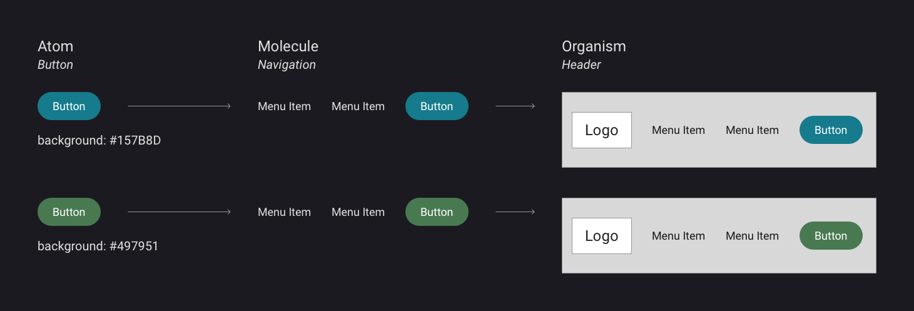
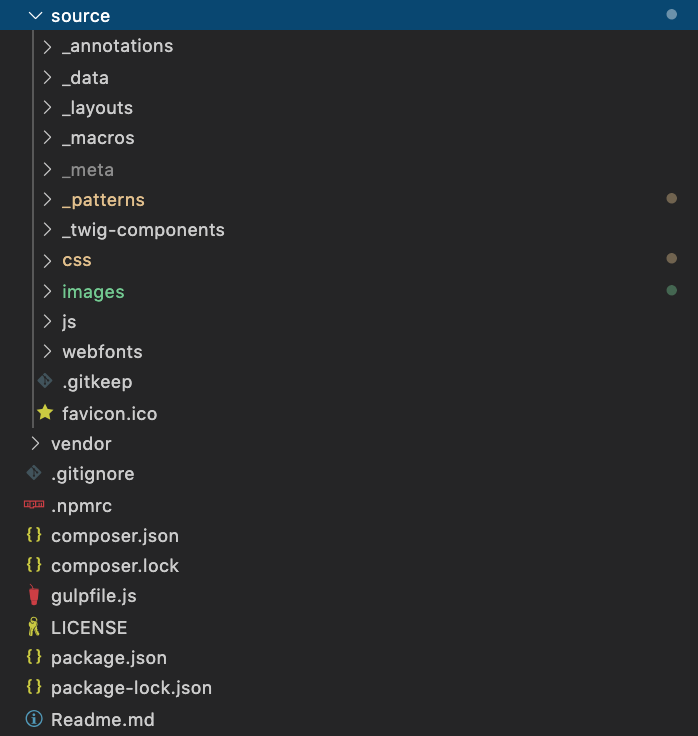
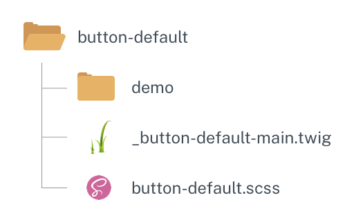
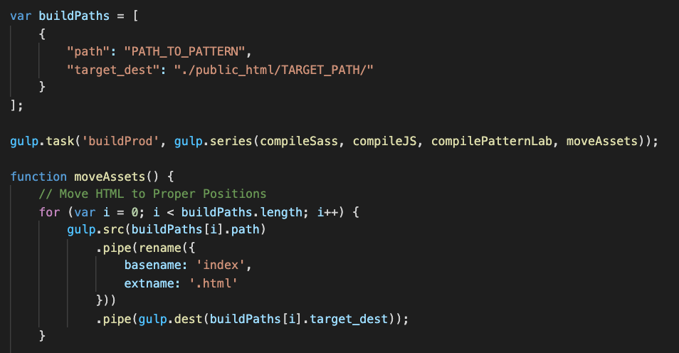

Official websites use .gov
A .gov website belongs to an official government organization in the United States.
Secure .gov websites use HTTPS
A lock () or https:// means you’ve safely connected to the .gov website. Share sensitive information only on official, secure websites.
Development
The foundation for the NIAID Design System is built on several libraries and technologies and is based on the philosophy of Atomic Design. This page explains these concepts and how they fit into developing with NDS.
Atomic Design
NDS employs the use of a development philosophy known as Atomic Design. Under this system, web components are broken up into their simplest parts, like colors, fonts, and button styles. These basic building blocks of design are referred to as Atoms. Atoms combine to create Molecules, which are more complex web structures. Examples of Molecules include teaser cards, input groups, and simple navigation structures. Finally, Molecules come together to create yet another level of complex web structures, such as website headers and footers. These structures are called Organisms, and are typically the most complex components. The following video provides a useful visualization for how these structures combine together.
Atomic Design explained.
Credit:
Pattern Lab
NDS focuses primarily on the first three levels of Atomic structure (Atoms, Molecules, & Organisms), due to its focus on integrating with Drupal. If Drupal is not used, further Atomic levels, such as Templates and Pages, can be leveraged to create static HTML sites.
Benefits of Atomic Design
There are many benefits to Atomic Design, including:
- Efficient code manipulation
- Modular components that can be reused
- Better organization of component files
1. Efficient code manipulation
Perhaps the most significant benefit of Atomic Design is the speed at which changes can be made to design components. Since web components or patterns are composed of other smaller components, changes need only happen in one place. For example, if a designer wanted to change the color of a button, and that button pattern is referenced in a featured content card molecule, the developer can change the color of the button at the Atom level, and any references to that pattern will be updated automatically.

This diagram explains how updating properties of Design System components propogate throughout the entire system. Updating the color of a button pattern will update the color in all patterns where that button is included.
Credit:
NIAID
2. Modular components that can be reused
Pattern Libraries of Design Systems cut down on development time by allowing components to be shared and reused across an unlimited number of web properties. NDS is constantly evolving and growing by incorporating new patterns into its component library.
3. Better organization of component files
Under Atomic Design, the various assets needed for a component, such as component-specific CSS, JS, and HTML, are packaged together in folders. This makes it easy to find the code that makes up a certain component, saving time during the development process. Furthermore, this organization makes it easier to share components with other projects.
Technologies & Frameworks
Pattern Lab (Twig Version)
NDS implements the Atomic Design philosophy using a framework called Pattern Lab. Pattern Lab houses the components that NDS provides to users and organizes them into atomic folders. The framework uses templating languages to create component structures, which gives developers the ability to feed smaller components into larger ones. These components are then compiled into web-ready HTML code.
Twig
Twig is a templating language which is responsible for defining the HTML structures for patterns. Unlike pure HTML, however, Twig allows users to create variables, render markup with loops, and include patterns inside other patterns. Pattern Lab relies on templating languages to implement Atomic Design through this inclusion. Pattern Lab supports a variety of templating languages, but due to Drupal integration support, NDS uses the Twig-based version.
View Pattern Lab's Documentation
Get more information about Pattern Lab setup, usage, and features.
Visit Pattern Lab's WebsiteOrganization
When working with NDS, it is important to understand the organization of an NDS Pattern Lab instance. The following sections describe the purpose of certain directories found within an NDS Pattern lab instance.
Source Directory
The ./source folder houses all NDS components as well as global CSS, JS, images, and fonts. Broadly, most development will happen within this folder.

The ./source folder and its contents.
Credit:
NIAID
Within the ./source folder, there are several important files and directories:
- _patterns/ Directory
- css/ Directory
- js/ Directory
- images/ Directory
_patterns Directory
Within the _patterns/ directory, components are grouped in folders by Atomic level (i.e. 01-atoms, 02-molecules, etc.). Each Atomic level is further broken down into Atomic sub-categories. For example, the 01-atoms folder contains pattern categories like buttons, icons, and images. Within these sub-categories, individual pattern directories can be found. Pattern directories contain the necessary assets for the pattern to function. The contents of a pattern folder may include:
- A main twig file, denoted _[atomic-sub-category]-[pattern-name]-main.twig (i.e. _button-default-main.twig)
- A SCSS file that has pattern-specific styling: (i.e. button-default.scss)
- A JS file that adds pattern-specific functionality (i.e. button-default.js)
- A demo directory that contains a twig file. This file contains a sample of how to reference or include the pattern in other places/patterns.

The structure of a button pattern.
Credit:
NIAID
In addition to the traditional Atomic level directories, where project-specific patterns are organized, NDS supplies its own out-of-the-box components in a 00-nds/ folder. Inside 00-nds/, patterns are organized into the usual 01-atoms, 02-molecules, etc. to mirror the conventional structure. Do not make changes to patterns in the 00-nds/ directory, since this directory may be updated as NDS evolves and changes will be removed. If you want to modify an NDS component for project-specific implementations, simply copy the pattern folder from inside 00-nds/ and add it to the proper Atomic subdirectory under the _patterns folder.
css/ Directory
The css/ directory houses the styling rules for the global aspects of NDS's visual appearance. It also holds the main "style.scss" which orchestrates how the Sass rules compile into CSS. The global/ directory houses the NDS SASS variables and mixins, as well as general styling rules such as heading and body font properties. The libraries/ directory houses third-party library CSS files. Similarly to the 00-nds/ directory, do not make changes in the global/ and libraries/ folders, as they are subject to continual updates.
For customizations of global styling rules, use the overrides/ directory. This folder directly mirrors the global/ folder, and NDS has been designed to give priority to rules in overrides/. For instance, if a site needed to specify its own set of breakpoints for use in responsive design, those modifications can be placed in the overrides/ folder.
js/ Directory
The js/ directory houses JavaScript files that NDS needs. These files include third-party library scripts, such as Bootstrap and Materialize. The js/ directory also includes "nds.js", a file that is a compiled version of all the pattern-specific scripts. Custom patterns with custom JS are compiled into nds.js.
images/ Directory
The images/ directory holds some generic placeholder images, as well as global images, such as document icons. Place any project-specific images needed into this folder.
Public Directory
When Pattern Lab compiles, a locally-hosted style guide is opened in a browser. This style guide comes from the ./public folder, wherein all patterns are converted to web-ready HTML.
When building a static website, the production HTML should be copied from within the ./public/patterns/ directory. The gulpfile.js file that ships with NDS has sample code to pull your final pages into a production-ready folder.

The gulpfile.js file provides an example of how to pull your final pages into a production-ready folder.
Credit:
NIAID
Core & Config Directories
The core/ and config/ directories are out-of-the-box directories that Pattern Lab needs to run properly. Generally, users of NDS do not need to edit the files found in these directories. However, the default Pattern Lab settings can be modified in the config/config.yml file. For more information, visit the Pattern Lab documentation page on configuration options.
Sass
Version: 4.0.1Sass augments CSS's capabilities by providing variables, functions (called mixins), and various other utilities. NDS relies on Sass to create standardized variables for use in patterns. During the build process, Sass code gets compiled into web-ready CSS. It is recommended that users of NDS have a basic understanding of the Sass technology.
jQuery
Version: 3.5.1jQuery is a JavaScript library that, according to its website, "makes things like HTML document traversal and manipulation, event handling, animation, and Ajax much simpler with an easy-to-use API that works across a multitude of browsers." In other words, jQuery simplifies many different different tasks in plain JavaScript. NDS is making strides to decouple from jQuery to provide more flexibility for developers, however, jQuery currently remains a dependency.
Gulp
Version: 4.0.2Gulp.js is a build tool that NDS uses to manage a variety of processes. This includes compiling SCSS to CSS, compiling Pattern Lab (turning Twig into HTML), concatenating scripts, and running minification functions. For building static websites, Gulp is essential in the process of producing web-ready assets.
Libraries & Dependencies
NDS uses the following libraries in various capacities:
- Bootstrap 4
- Font Awesome
- Materialize
- DataTables
- Select2
- Bootstrap Datepicker
- U.S. Web Design System (USWDS)
This section describes what these libraries are and how they factor into development with NDS.
Bootstrap 4
Version: 4.5.2Bootstrap is a front-end library that provides stylesheets and functional components designed to accelerate web development. While NDS relies on Bootstrap primarily for its grid system, other functional components, such as dropdowns and modals, are also leveraged.
Font Awesome
Version: 5.15.1Font Awesome is the NIAID Design System's official icon vendor. NDS provides the infrastructure to use the Free version of Font Awesome icons out of the box. If you have a need for extended support or would like to request access to Font Awesome Pro, please use the Web Request Form to submit a request.
Materialize
Version: 1.0.0Materialize is a front-end library that has converted guidance from Google's Material Design documentation into code. The main utility of this library that is leveraged in NDS is the Parallax effect for hero images. Other capabilities may be used for custom needs as well.
DataTables
Version: 1.10.20Tables can be tricky on the web for accessibility and responsive reasons. NDS employs DataTables to create properly formatted, simple tables and improve the experience of tables across devices. Adding the custom attribute nds-datatable="true" to the table tag will initizlaize the responsive functionality of DataTables.
Select2
Version: 4.0.13Select2 enhances dropdown fields (select elements) by adding additional functionality such as inline searching and multi-select.
Bootstrap Datepicker
Version: 1.9.0Bootstrap Datepicker provides a useful pop-up interface for making a date selection in a form.
U.S. Web Design System (USWDS)
Version: 2.9.0USWDS is the official design system created and maintained by Digital.gov. NDS uses JS and CSS files from the USWDS package for the USWDS Banner Component. If you are not planning to use this component, you may omit these files from your website.
Themes
NDS comes preconfigured with a set of theming options including heading and body font family, color palettes, and corner radius. For the complete set of options, visit the Theme Builder. NDS applies these styles through the use of classes applied to the <body> HTML tag.
Developing with Typography
NDS users can select font families for the headings and body of a page. For the headings, there are four available fonts to choose from - Public Sans, Roboto, Martel, and Merriweather. To apply one of these fonts to your headings, add the appropriate body class:
- Public Sans:
style--headings--public-sans - Roboto:
style--headings--roboto - Martel:
style--headings--martel - Merriweather:
style--headings--merriweather
For body font, NDS provides two options: Public Sans and Roboto. To apply one of these fonts to your body, add the appropriate body class:
- Public Sans:
style--body--public-sans - Roboto:
style--body--roboto
You may download any of these font families below:
Developing with Colors
Currently, NDS users have three color palette options to choose from, however, more may be available in the future. Add the corresponding body class for your desired palette:
Theme 1 (Default):
style--colors--theme-1
Primary Button
#157B8D
Secondary Button
#497951
Navigation
#262626
Accent
#75C3AC
Theme 2:
style--colors--theme-2
Primary Button
#586FAB
Secondary Button
#247BA0
Navigation
#244D56
Accent
#FAB952
Theme 3:
style--colors--theme-3
Primary Button
#14675A
Secondary Button
#423E63
Navigation
#123B56
Accent
#79A9D1
Developing with Shadows
NDS supports both the Flat and Material Design visual style. By default, NDS is configured in Flat design. If Material Design is desired, add the following class to the body:
style--shadows
Developing with Corners
There are three corner styles available with NDS: Sharp, Semi-Rounded, Fully-Rounded. To apply one of these corner styles to your site, add the appropriate body class:
- Sharp:
style--corners--straight - Semi-Rounded:
style--corners--semirounded - Fully-Rounded:
style--corners--rounded